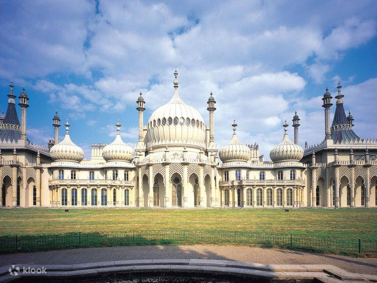
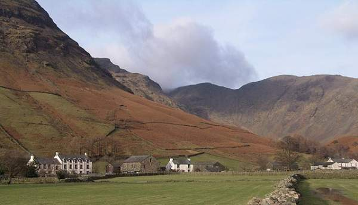

ENGLAND
England is a country that is part of the United Kingdom. It is located on the island of Great Britain, of which it covers approximately 62%, and over 100 smaller adjacent islands.
ROYAL PAVILION
The Royal Pavilion and surrounding gardens is a Grade I listed former royal residence located in Brighton, England. Beginning in 1787, it was built in three stages as a seaside retreat for George, Prince of Wales, who became the Prince Regent in 1811, and King George IV in 1820.
WASDALE VALLEY
Wasdale is a valley and civil parish in the western part of the Lake District National Park in Cumbria, England. The River Irt flows through the valley to its estuary at Ravenglass. A large part of the main valley floor is occupied by Wastwater, the deepest lake in England.